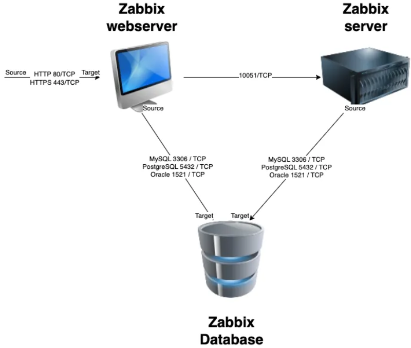

Basic installation¶
In this chapter, we will walk through the process of installing the Zabbix server. There are many different ways to setup a Zabbix server. We will cover the most common setups with MariaDB and PostgreSQL on Ubuntu and on Rocky Linux.
Before beginning the installation, it is important to understand the architecture of Zabbix. The Zabbix server is structured in a modular fashion, composed of three main components, which we will discuss in detail.
- The Zabbix server
- The Zabbix web server
- The Zabbix database
 1.1 Zabbix basic split installation
All of these components can either be installed on a single server or distributed across three separate servers. The core of the system is the Zabbix server, often referred to as the "brain." This component is responsible for processing trigger calculations and sending alerts. The database serves as the storage for the Zabbix server’s configuration and all the data it collects. The web server provides the user interface (front-end) for interacting with the system. It is important to note that the Zabbix API is part of the front-end component, not the Zabbix server itself.
These components must function together seamlessly, as illustrated in the diagram above. The Zabbix server must read configurations and store monitoring data in the database, while the front-end needs access to read and write configuration data. Furthermore, the front-end must be able to check the status of the Zabbix server and retrieve additional necessary information to ensure smooth operation.
For our setup, we will be using two virtual machines (VMs): one VM will host both the Zabbix server and the Zabbix web front-end, while the second VM will host the Zabbix database.
Note
It's perfect possible to install all components on 1 single VM or every component on a separate VM. Reason we split the DB as an example is because the database will probably be the first component giving you performance headaches. It's also the component that needs some extra attention when we split it so for this reason we have chosen in this example to split the database from the rest of the setup.
We will cover the following topics:
- Install our Database based on MariaDB.
- Install our Database based on PostgreSQL.
- Installing the Zabbix server.
- Install the frontend.
Installing the MariaDB database¶
To begin the installation process for the MariaDB server, the first step involves manually creating a repository configuration file. This file, mariadb.repo on Rocky, must be placed in the /etc/yum.repos.d/ directory. The repository file will allow your package manager to locate and install the necessary MariaDB components. For Ubuntu we need to import the repository keys and create a file for example '/etc/apt/sources.list.d/mariadb.sources'.
To create the MariaDB repository file, execute the following command in your terminal:
RedHat
# vi /etc/yum.repos.d/mariadb.repo
Ubuntu
# sudo apt-get install apt-transport-https curl
# sudo mkdir -p /etc/apt/keyrings
#sudo curl -o /etc/apt/keyrings/mariadb-keyring.pgp 'https://mariadb.org/mariadb_release_signing_key.pgp'
# sudo vi /etc/apt/sources.list.d/mariadb.sources
This will open a text editor where you can input the repository configuration details. Once the repository is configured, you can proceed with the installation of MariaDB using your package manager.
Tip
Always check Zabbix documentation for the latest supported versions.
The latest config can be found here: https://mariadb.org/download/?t=repo-config
Here’s the configuration you need to add into the file:
RedHat
# MariaDB 11.4 RedHatEnterpriseLinux repository list - created 2025-02-21 10:15 UTC
# https://mariadb.org/download/
[mariadb]
name = MariaDB
# rpm.mariadb.org is a dynamic mirror if your preferred mirror goes offline. See https://mariadb.org/mirrorbits/ for details.
# baseurl = https://rpm.mariadb.org/11.4/rhel/$releasever/$basearch
baseurl = https://mirror.bouwhuis.network/mariadb/yum/11.4/rhel/$releasever/$basearch
# gpgkey = https://rpm.mariadb.org/RPM-GPG-KEY-MariaDB
gpgkey = https://mirror.bouwhuis.network/mariadb/yum/RPM-GPG-KEY-MariaDB
gpgcheck = 1
Ubuntu
# MariaDB 11.4 repository list - created 2025-02-21 11:42 UTC
# https://mariadb.org/download/
X-Repolib-Name: MariaDB
Types: deb
# deb.mariadb.org is a dynamic mirror if your preferred mirror goes offline. See https://mariadb.org/mirrorbits/ for details.
# URIs: https://deb.mariadb.org/11.4/ubuntu
URIs: https://mirror.bouwhuis.network/mariadb/repo/11.4/ubuntu
Suites: noble
Components: main main/debug
Signed-By: /etc/apt/keyrings/mariadb-keyring.pgp
After saving the file, ensure that everything is properly set up and that your MariaDB version is compatible with your Zabbix version to avoid potential integration issues.
Before proceeding with the MariaDB installation, it’s a best practice to ensure your operating system is up-to-date with the latest patches and security fixes. This will help maintain system stability and compatibility with the software you're about to install.
To update your OS, run the following command:
RedHat
# dnf update -y
Ubuntu
sudo apt-get update
This command will automatically fetch and install the latest updates available for your system, applying security patches, performance improvements, and bug fixes. Once the update process is complete, you can move forward with the MariaDB installation.
Install the MariaDB database¶
With the operating system updated and the MariaDB repository configured, you are now ready to install the MariaDB server and client packages. This will provide the necessary components to run and manage your database.
To install the MariaDB server and client, execute the following command:
RedHat
# dnf install MariaDB-server MariaDB-client
Ubuntu
sudo apt-get install mariadb-server
This command will download and install both the server and client packages, enabling you to set up, configure, and interact with your MariaDB database. Once the installation is complete, you can proceed to start and configure the MariaDB service.
Now that MariaDB is installed, we need to enable the service to start automatically upon boot and start it immediately. Use the following command to accomplish this:
RedHat
# systemctl enable mariadb --now
This command will both enable and start the MariaDB service. Once the service is running, you can verify that the installation was successful by checking the version of MariaDB using the following command:
RedHat and Ubuntu
# mariadb -V
The expected output should resemble this:
mariadb from 11.4.5-MariaDB, client 15.2 for Linux (aarch64) using EditLine wrapper
To ensure that the MariaDB service is running properly, you can check its status with the following command:
RedHat and Ubuntu
# systemctl status mariadb
You should see an output similar to this, indicating that the MariaDB service is active and running:
mariadb.service - MariaDB 11.4.5 database server
Loaded: loaded (/usr/lib/systemd/system/mariadb.service; enabled; preset: disabled)
Drop-In: /etc/systemd/system/mariadb.service.d
└─migrated-from-my.cnf-settings.conf
Active: active (running) since Fri 2025-02-21 11:22:59 CET; 2min 8s ago
Docs: man:mariadbd(8)
https://mariadb.com/kb/en/library/systemd/
Process: 23147 ExecStartPre=/bin/sh -c systemctl unset-environment _WSREP_START_POSITION (code=exited, status=0/SUCCESS)
Process: 23148 ExecStartPre=/bin/sh -c [ ! -e /usr/bin/galera_recovery ] && VAR= || VAR=`/usr/bin/galera_recovery`; [ $? -eq 0 ] && systemctl set-enviro>
Process: 23168 ExecStartPost=/bin/sh -c systemctl unset-environment _WSREP_START_POSITION (code=exited, status=0/SUCCESS)
Main PID: 23156 (mariadbd)
Status: "Taking your SQL requests now..."
Tasks: 7 (limit: 30620)
Memory: 281.7M
CPU: 319ms
CGroup: /system.slice/mariadb.service
└─23156 /usr/sbin/mariadbd
Feb 21 11:22:58 localhost.localdomain mariadbd[23156]: 2025-02-21 11:22:58 0 [Note] InnoDB: Loading buffer pool(s) from /var/lib/mysql/ib_buffer_pool
Feb 21 11:22:58 localhost.localdomain mariadbd[23156]: 2025-02-21 11:22:58 0 [Note] Plugin 'FEEDBACK' is disabled.
Feb 21 11:22:58 localhost.localdomain mariadbd[23156]: 2025-02-21 11:22:58 0 [Note] Plugin 'wsrep-provider' is disabled.
Feb 21 11:22:58 localhost.localdomain mariadbd[23156]: 2025-02-21 11:22:58 0 [Note] InnoDB: Buffer pool(s) load completed at 250221 11:22:58
Feb 21 11:22:58 localhost.localdomain mariadbd[23156]: 2025-02-21 11:22:58 0 [Note] Server socket created on IP: '0.0.0.0'.
Feb 21 11:22:58 localhost.localdomain mariadbd[23156]: 2025-02-21 11:22:58 0 [Note] Server socket created on IP: '::'.
Feb 21 11:22:58 localhost.localdomain mariadbd[23156]: 2025-02-21 11:22:58 0 [Note] mariadbd: Event Scheduler: Loaded 0 events
Feb 21 11:22:58 localhost.localdomain mariadbd[23156]: 2025-02-21 11:22:58 0 [Note] /usr/sbin/mariadbd: ready for connections.
Feb 21 11:22:58 localhost.localdomain mariadbd[23156]: Version: '11.4.5-MariaDB' socket: '/var/lib/mysql/mysql.sock' port: 3306 MariaDB Server
Feb 21 11:22:59 localhost.localdomain systemd[1]: Started MariaDB 11.4.5 database server.
This confirms that your MariaDB server is up and running, ready for further configuration.
Securing the MariaDB Database¶
To enhance the security of your MariaDB server, it's essential to remove unnecessary test databases, anonymous users, and set a root password. This can be done using the mariadb-secure-installation script, which provides a step-by-step guide to securing your database.
Run the following command:
RedHat and Ubuntu
# sudo mariadb-secure-installation
NOTE: RUNNING ALL PARTS OF THIS SCRIPT IS RECOMMENDED FOR ALL MariaDB
SERVERS IN PRODUCTION USE! PLEASE READ EACH STEP CAREFULLY!
In order to log into MariaDB to secure it, we'll need the current
password for the root user. If you've just installed MariaDB, and
haven't set the root password yet, you should just press enter here.
Enter current password for root (enter for none):
OK, successfully used password, moving on...
Setting the root password or using the unix_socket ensures that nobody
can log into the MariaDB root user without the proper authorisation.
You already have your root account protected, so you can safely answer 'n'.
Switch to unix_socket authentication [Y/n] n
... skipping.
You already have your root account protected, so you can safely answer 'n'.
Change the root password? [Y/n] y
New password:
Re-enter new password:
Password updated successfully!
Reloading privilege tables..
... Success!
By default, a MariaDB installation has an anonymous user, allowing anyone
to log into MariaDB without having to have a user account created for
them. This is intended only for testing, and to make the installation
go a bit smoother. You should remove them before moving into a
production environment.
Remove anonymous users? [Y/n] y
... Success!
Normally, root should only be allowed to connect from 'localhost'. This
ensures that someone cannot guess at the root password from the network.
Disallow root login remotely? [Y/n] y
... Success!
By default, MariaDB comes with a database named 'test' that anyone can
access. This is also intended only for testing, and should be removed
before moving into a production environment.
Remove test database and access to it? [Y/n] y
- Dropping test database...
... Success!
- Removing privileges on test database...
... Success!
Reloading the privilege tables will ensure that all changes made so far
will take effect immediately.
Reload privilege tables now? [Y/n] y
... Success!
Cleaning up...
All done! If you've completed all of the above steps, your MariaDB
installation should now be secure.
Thanks for using MariaDB!
The mariadb-secure-installation script will guide you through several key steps:
- Set a root password if one isn't already set.
- Remove anonymous users.
- Disallow remote root logins.
- Remove the test database.
- Reload the privilege tables to ensure the changes take effect.
Once complete, your MariaDB instance will be significantly more secure. You are now ready to configure the database for Zabbix.
Create the Zabbix database¶
With MariaDB now set up and secured, we can move on to creating the database for Zabbix. This database will store all the necessary data related to your Zabbix server, including configuration information and monitoring data.
Follow these steps to create the Zabbix database:
Log in to the MariaDB shell as the root user: You'll be prompted to enter the root password that you set during the mariadb-secure-installation process.
RedHat and Ubuntu
# mariadb -uroot -p
Once you're logged into the MariaDB shell, run the following command to create a database for Zabbix:
MariaDB [(none)]> CREATE DATABASE zabbix CHARACTER SET utf8mb4 COLLATE utf8mb4_bin;
Note
utf8mb4 is a proper implementation of UTF-8 in MySQL/MariaDB, supporting all Unicode characters, including emojis. The older utf8 charset in MySQL/MariaDB only supports up to three bytes per character and is not a true UTF-8 implementation, which is why utf8mb4 is recommended.
This command creates a new database named zabbix with the UTF-8 character set, which is required for Zabbix.
Create a dedicated user for Zabbix and grant the necessary privileges: Next, you need to create a user that Zabbix will use to access the database. Replace password with a strong password of your choice.
MariaDB [(none)]> CREATE USER 'zabbix-web'@'<zabbix server ip>' IDENTIFIED BY '<password>';
MariaDB [(none)]> CREATE USER 'zabbix-srv'@'<zabbix server ip>' IDENTIFIED BY '<password>';
MariaDB [(none)]> GRANT ALL PRIVILEGES ON zabbix.* TO 'zabbix-srv'@'<zabbix server ip>';
MariaDB [(none)]> GRANT SELECT, UPDATE, DELETE, INSERT ON zabbix.* TO 'zabbix-web'@'<zabbix server ip>';
MariaDB [(none)]> FLUSH PRIVILEGES;
This creates new users for zabbix-web and zabbix-srv, grants them access to the zabbix database, and ensures that the privileges are applied immediately.
In some cases, especially when setting up Zabbix with MariaDB, you might encounter issues related to stored functions and triggers if binary logging is enabled. To address this, you need to set the log_bin_trust_function_creators option to 1 in the MariaDB configuration file. This allows non-root users to create stored functions and triggers without requiring SUPER privileges, which are restricted when binary logging is enabled.
MariaDB [(none)]> SET GLOBAL log_bin_trust_function_creators = 1;
MariaDB [(none)]> QUIT
At this point, your Zabbix database is ready, and you can proceed with configuring the Zabbix server to connect to the database.
Warning
In the Zabbix documentation, it is explicitly stated that deterministic triggers need to be created during the schema import. On MySQL and MariaDB systems, this requires setting GLOBAL log_bin_trust_function_creators = 1 if binary logging is enabled, and you lack superuser privileges.
If the log_bin_trust_function_creators option is not set in the MySQL configuration file, it will block the creation of these triggers during schema import. This is essential because, without superuser access, non-root users cannot create triggers or stored functions unless this setting is applied.
To summarize:
-
Binary logging enabled: If binary logging is enabled and the user does not have superuser privileges, the creation of necessary Zabbix triggers will fail unless log_bin_trust_function_creators = 1 is set.
-
Solution: Add log_bin_trust_function_creators = 1 to the [mysqld] section in your MySQL/MariaDB configuration file or temporarily set it at runtime with SET GLOBAL log_bin_trust_function_creators = 1 if you have sufficient permissions.
This ensures that Zabbix can successfully create the required triggers during schema import without encountering privilege-related errors.
Installing the PostgreSQL database¶
For our DB setup with PostgreSQL we need to add our PostgreSQL repository first to the system. As of writing PostgreSQL 13-17 are supported but best is to have a look before you install it as new versions may be supported and older maybe unsupported both by Zabbix and PostgreSQL. Usually it's a good idea to go with the latest version that is supported by Zabbix. Zabbix also supports the extension TimescaleDB this is something we will talk later about. As you will see the setup from PostgreSQL is very different from MySQL not only the installation but also securing the DB.
The table of compatibility can be found https://docs.timescale.com/self-hosted/latest/upgrades/upgrade-pg/
Add the PostgreSQL repository¶
So let us start first setting up our PostgreSQL repository with the following commands.
RedHat
# Install the repository RPM:
sudo dnf install -y https://download.postgresql.org/pub/repos/yum/reporpms/EL-9-x86_64/pgdg-redhat-repo-latest.noarch.rpm
# Disable the built-in PostgreSQL module:
sudo dnf -qy module disable postgresql
# Install PostgreSQL:
sudo dnf install -y postgresql17-server
# Initialize the database and enable automatic start:
sudo /usr/pgsql-17/bin/postgresql-17-setup initdb
sudo systemctl enable postgresql-17 --now
Ubuntu
todo
Securing the PostgreSQL database¶
PostgreSQL handles access permissions differently from MySQL and MariaDB. PostgreSQL relies on a file called pg_hba.conf to manage who can access the database, from where, and what encryption method is used for authentication.
Note
Client authentication in PostgreSQL is configured through the pg_hba.conf file, where "HBA" stands for Host-Based Authentication. This file specifies which users can access the database, from which hosts, and how they are authenticated. For further details, you can refer to the official PostgreSQL documentation." https://www.postgresql.org/docs/current/auth-pg-hba-conf.html
Add the following lines, the order here is important.
Redhat
# vi /var/lib/pgsql/17/data/pg_hba.conf
Ubuntu
Todo
The result should look like :
# "local" is for Unix domain socket connections only
local zabbix zabbix-srv scram-sha-256
local all all peer
# IPv4 local connections
host zabbix zabbix-srv <ip from zabbix server/24> scram-sha-256
host zabbix zabbix-web <ip from zabbix server/24> scram-sha-256
host all all 127.0.0.1/32 scram-sha-256
After we changed the pg_hba file don't forget to restart postgres else the settings will not be applied. But before we restart let us also edit the file postgresql.conf and allow our database to listen on our network interface for incoming connections from the zabbix server. Postgresql will standard only allow connections from the socket.
RedHat
# vi /var/lib/pgsql/17/data/postgresql.conf
Ubuntu
todo
To configure PostgreSQL to listen on all network interfaces, you need to modify
the postgresql.conf file. Locate the following line:
#listen_addresses = 'localhost'
and replace it with:
listen_addresses = '*'
This will enable PostgreSQL to accept connections from any network interface, not just the local machine. After making this change, restart the PostgreSQL service to apply the new settings:
Redhat
# systemctl restart postgresql-17
Ubuntu
todo
If the service fails to restart, review the pg_hba.conf file for any syntax errors, as incorrect entries here may prevent PostgreSQL from starting.
Next, to prepare your PostgreSQL instance for Zabbix, you'll need to create the necessary database tables. Begin by installing the Zabbix repository, as you did for the Zabbix server. Then, install the appropriate Zabbix package that contains the predefined tables, images, icons, and other database elements needed for the Zabbix application.
Add the Zabbix repository and populate the PgSQL DB¶
To begin, add the Zabbix repository to your system by running the following commands:
RedHat
# dnf install https://repo.zabbix.com/zabbix/7.2/release/rocky/9/noarch/zabbix-release-latest-7.2.el9.noarch.rpm -y
# dnf install zabbix-sql-scripts -y
Ubuntu
todo
With the necessary packages installed, you are now ready to create the Zabbix users for both the server and frontend.
First, switch to the postgres user and create the Zabbix server database user:
# su - postgres
# createuser --pwprompt zabbix-srv
Enter password for new role: <server-password>
Enter it again: <server-password>
Next, create the Zabbix frontend user, which will be used to connect to the database:
# createuser --pwprompt zabbix-web
Enter password for new role: <frontend-password>
Enter it again: <frontend-password>
After creating the users, you need to prepare the database schema. As the root user, unzip the necessary schema files by running the following command:
RedHat
# gzip -d /usr/share/zabbix/sql-scripts/postgresql/server.sql.gz
Ubuntu
todo
Note
Zabbix seems to like to change the locations of the script to populate the DB every version or in between versions. If you encounter an error take a look at the Zabbix documentation there is a good chance that some location was changed.
This will extract the database schema required for the Zabbix server.
Now that the users are created, the next step is to create the Zabbix database.
First, switch to the postgres user and execute the following command to create
the database with the owner set to zabbix-srv:
RedHat
# su - postgres
# createdb -E Unicode -O zabbix-srv zabbix
# exit
Ubuntu
Todo
Once the database is created, you should verify the connection and ensure that the correct user session is active. To do this, log into the zabbix database using the zabbix-srv user:
# psql -d zabbix -U zabbix-srv
After logging in, run the following SQL query to confirm that both the session_user
and current_user are set to zabbix-srv:
zabbix=> SELECT session_user, current_user;
session_user | current_user
--------------+--------------
zabbix-srv | zabbix-srv
(1 row)
If the output matches, you are successfully connected to the database with the correct user.
PostgreSQL indeed differs significantly from MySQL or MariaDB in several aspects, and one of the key features that sets it apart is its use of schemas. Unlike MySQL, where databases are more standalone, PostgreSQL's schema system provides a structured, multi-user environment within a single database.
Schemas act as logical containers within a database, enabling multiple users or applications to access and manage data independently without conflicts. This feature is especially valuable in environments where several users or applications need to interact with the same database concurrently. Each user or application can have its own schema, preventing accidental interference with each other’s data.
Note
PostgreSQL comes with a default schema, typically called public, but it's in general best practice to create custom schemas to better organize and separate database objects, especially in complex or multi-user environments.
For more in-depth information, I recommend checking out the detailed guide at this URI, https://hevodata.com/learn/postgresql-schema/#schema which explains the benefits and use cases for schemas in PostgreSQL.
To finalize the database setup for Zabbix, we need to configure schema permissions
for both the zabbix-srv and zabbix-web users.
First, we create a custom schema named zabbix_server and assign ownership to
the zabbix-srv user:
zabbix=> CREATE SCHEMA zabbix_server AUTHORIZATION "zabbix-srv";
CREATE SCHEMA
Next, we set the search path to zabbix_server schema so that it's the default
for the current session:
zabbix=> SET search_path TO "zabbix_server";
To confirm the schema setup, you can list the existing schemas:
zabbix=> \dn
List of schemas
Name | Owner
---------------+-------------------
public | pg_database_owner
zabbix_server | zabbix-srv
(2 rows)
At this point, the zabbix-srv user has full access to the schema, but the zabbix-web
user still needs appropriate permissions to connect and interact with the database.
First, we grant USAGE privileges on the schema to allow zabbix-web to connect:
zabbix=# GRANT USAGE ON SCHEMA zabbix_server TO "zabbix-web";
GRANT
However, zabbix-web still cannot perform any operations on the tables or sequences.
To allow basic data interaction without giving too many privileges, grant the
following permissions:
- For tables: SELECT, INSERT, UPDATE, and DELETE.
- For sequences: SELECT and UPDATE.
zabbix=# GRANT SELECT, INSERT, UPDATE, DELETE ON ALL TABLES IN SCHEMA zabbix_server TO "zabbix-web";
grant
zabbix=# GRANT SELECT, UPDATE ON ALL SEQUENCES IN SCHEMA zabbix_server TO "zabbix-web";
GRANT
Now, the zabbix-web user has appropriate access to interact with the schema
while maintaining security by limiting permissions to essential operations.
With the users and permissions set up correctly, you can now populate the database with the Zabbix schema created and other required elements. Follow these steps:
- Execute the SQL file to populate the database. Run the following command in the
psqlshell:
Warning
Make sure you did previous steps carefully so that you have selected the correct search_path.
sql zabbix=# \i /usr/share/zabbix/sql-scripts/postgresql/server.sql
Warning
Depending on your hardware or VM performance, this process can take anywhere from a few seconds to several minutes. Please be patient and avoid cancelling the operation.
- Monitor the progress as the script runs. You will see output similar to:
zabbix=> \i /usr/share/zabbix/sql-scripts/postgresql/server.sql
CREATE TABLE
CREATE INDEX
CREATE TABLE
CREATE INDEX
CREATE TABLE
...
...
...
INSERT 0 10444
DELETE 90352
COMMIT
Once the script completes and you return to the zabbix=# prompt, the database
should be successfully populated with all the required tables, schemas,
images, and other elements needed for Zabbix.
Note
If you encounter the following error during the SQL import:
vbnet psql:/usr/share/zabbix/sql-scripts/postgresql/server.sql:7: ERROR: no
schema has been selected to create in It indicates that the search_path setting
might not have been correctly applied. This setting is crucial because it specifies
the schema where the tables and other objects should be created. By correctly
setting the search path, you ensure that the SQL script will create tables
and other objects in the intended schema.
To ensure that the Zabbix tables were created successfully and have the correct
permissions, you can verify the table list and their ownership using the psql command:
- List the Tables: Use the following command to list all tables in the
zabbix_serverschema:
sql zabbix=# \dt
You should see a list of tables with their schema, name, type, and owner. For example:
zabbix=> \dt
List of relations
Schema | Name | Type | Owner
---------------+----------------------------+-------+------------
zabbix_server | acknowledges | table | zabbix-srv
zabbix_server | actions | table | zabbix-srv
zabbix_server | alerts | table | zabbix-srv
zabbix_server | auditlog | table | zabbix-srv
zabbix_server | autoreg_host | table | zabbix-srv
zabbix_server | changelog | table | zabbix-srv
zabbix_server | conditions | table | zabbix-srv
...
...
...
zabbix_server | valuemap | table | zabbix-srv
zabbix_server | valuemap_mapping | table | zabbix-srv
zabbix_server | widget | table | zabbix-srv
zabbix_server | widget_field | table | zabbix-srv
(203 rows)
- Verify Permissions: Confirm that the zabbix-srv user owns the tables and has the necessary permissions. You can check permissions for specific tables using the \dp command:
sql zabbix=# \dp zabbix_server.*
This will display the access privileges for all tables in the zabbix_server
schema. Ensure that zabbix-srv has the required privileges.
If everything looks correct, your tables are properly created and the zabbix-srv
user has the appropriate ownership and permissions. If you need to adjust any
permissions, you can do so using the GRANT commands as needed.
Note
If you prefer not to set the search path manually each time you log in as the
zabbix-srv user, you can configure PostgreSQL to automatically use the desired
search path. Run the following SQL command to set the default search path for
the zabbix-srv role:
sql zabbix=> ALTER ROLE "zabbix-srv" SET search_path = "$user", public, zabbix_server;
This command ensures that every time the zabbix-srv user connects to the
database, the search_path is automatically set to include $user, public, and zabbix_server.
If you are ready you can exit the database and return as user root.
zabbix=> \q